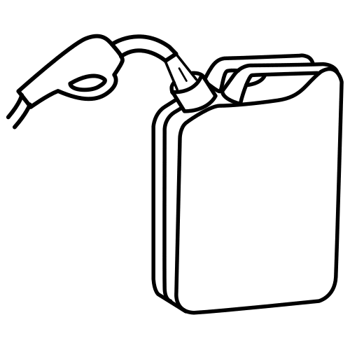
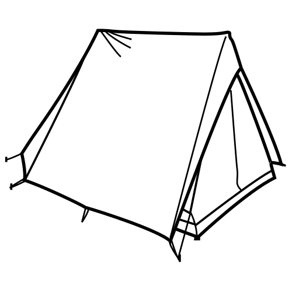
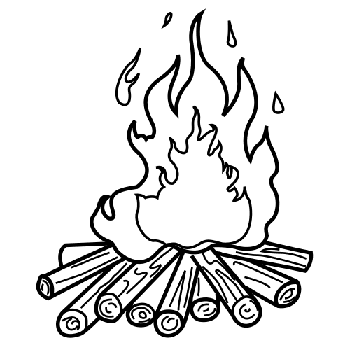
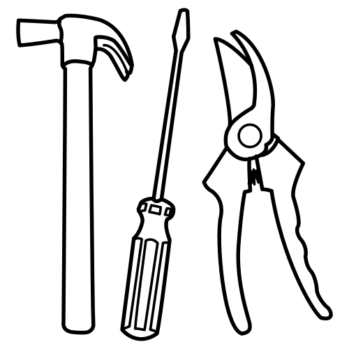
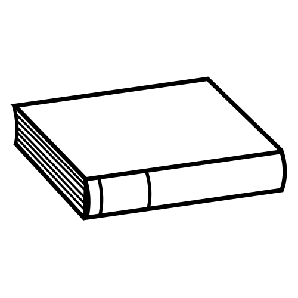
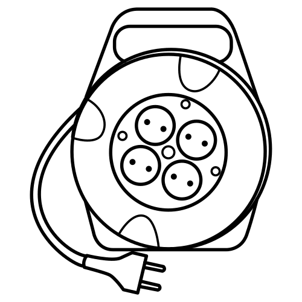
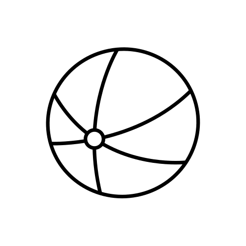
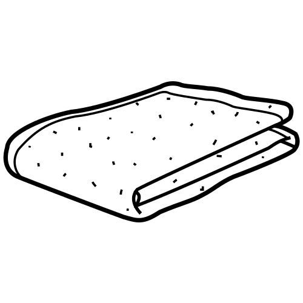
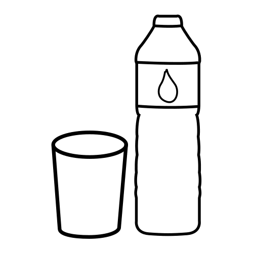

Protezione CivileGruppo Comunale Volontari — Genzano di Roma
Bambini · 5-9 anni
Al campo, cerchia i pericoli
5-9 anni · attività di osservazione🔍 Al campo di Protezione Civile non tutto è un giocattolo. Alcuni oggetti sembrano divertenti ma fanno male. Guarda i dieci oggetti qui sotto e cerchia in rosso quelli pericolosi: non vanno toccati. Gli altri li puoi lasciare così. Prima di cerchiare, di' ad alta voce che cos'è ogni oggetto.









💡 Se vedi qualcosa che ti sembra pericoloso, non toccarlo. Avvisa subito un volontario o un adulto.
Per l'adulto: al campo ci sono anche pericoli che qui non sono disegnati — vetri rotti, oggetti taglienti, pentole calde. Chiedi al bambino che altro gli sembra da non toccare. · Pittogrammi: ARASAAC (arasaac.org), Governo d'Aragona — autore Sergio Palao, licenza CC BY-NC-SA 4.0. Questa scheda eredita la stessa licenza.
🔑 Soluzione — gira il foglio sottosopra per leggere
✅ Cose sicure (lasciale così)
- Tenda PC
- Sedia
- Libro
- Palla
- Bottiglia d'acqua
- Coperta
⚠️ Pericoli (da cerchiare in rosso)
- Prolunga elettrica → scossa, e ci si inciampa
- Tanica di benzina → fuoco
- Fuoco acceso → ustione
- Attrezzi da lavoro → solo per gli adulti